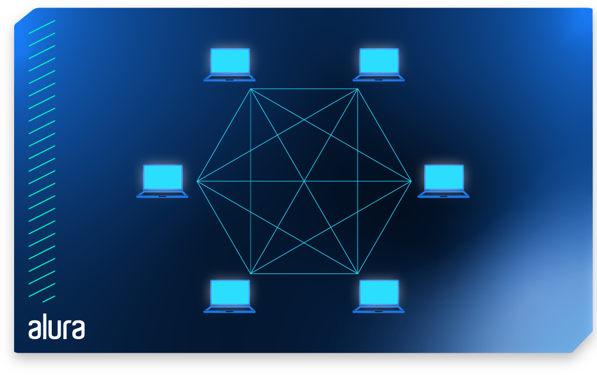

|
Rede de computadires
uma rede de computadores é um cojunto de equipamentos interligados de maneira a trocarem informções e compartilharem recursos, como arquivos de dados gravados, impressoas, modems, softwares e outros equipamentos

|
| importância das redes de computadores
proporcionam economia, compartilahmento de recursos, como de impressoras e projetores, bem cmo de serviços, que é o caso da internet. Permite também, por meio do compartilhamento de arquivos, o trabalho em equipes dos colaboradores.
|
|
LAN LAW
LAN(local Area Network) é uma rede de computadores que cobre uma área limitada, geralmente um edifício ou um campus. É usada para conectar dispositivos em u espaço físico limitado, como uma casa, escrítorio ou sala de aula. Já WAN (Wide Area Network) é uma rede de computadores que abragem uma área geográfica maior, geralmente uma cidade, um estado ou atê mesmo um país. Ela é usada para conectar dispositivos que estão fisicamente distantes entre si.
|